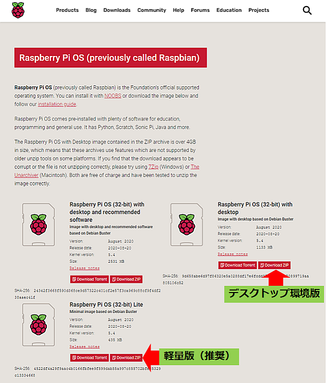
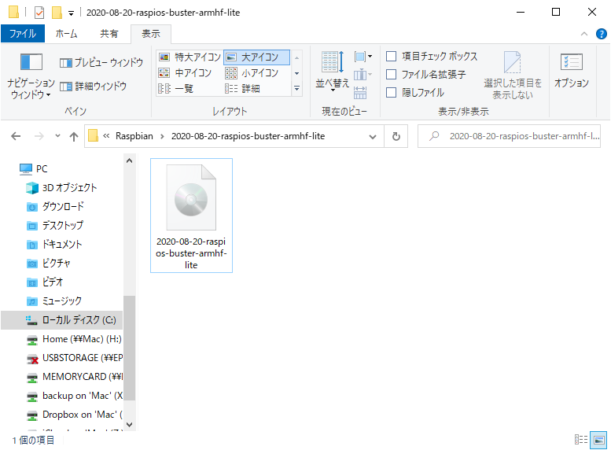
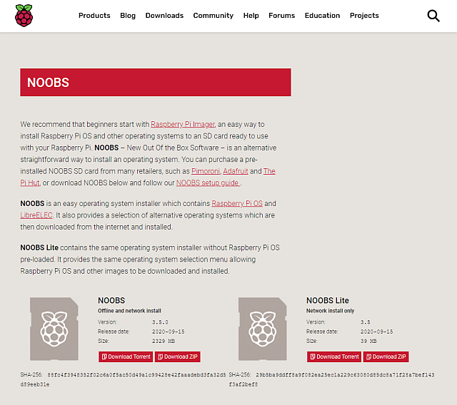
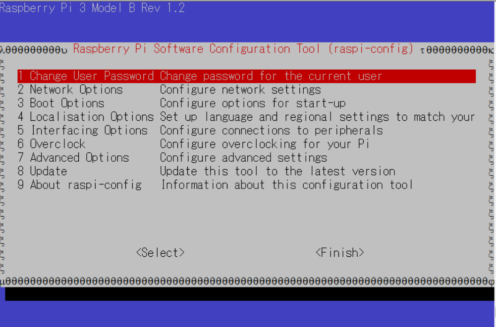

RaspberryPiMouseセットアップ¶
目次
RaspberryPi 3B+へOSのインストール¶
RasPiMouse2019のハードウェアの組み立ての前に、搭載するCPUボード(RaspberryPi 3B+)に OSのインストールとRasPiMouse2019の各種デバイスを動作させるためのデバイスドライバのインストールを行ってください。
RaspberryPi 3B+にRaspbianをインストール¶
RaspberryPi にOSをインストールする方法は大きく分けて二通りあります。
標準OS Raspbian のイメージをダウンロードしてSDカードに書き込み (少し難しいが短時間でインストール可能)
OS選択式インストーラ NOOBS をSDカードに書き込みインストール時にOSを選択 (簡単だが多少時間がかかる)
いずれの方法も手順通りやれば難しくはなく、かかる時間もそれほど差はありません。
Raspbian (Raspberry Pi OS) を直接インストール¶
オフィシャルサイトの Raspbian ダウンロードサイト からOSイメージをダウンロードして、SDカードに書き込みます。
なお、このドキュメント執筆時点では、以下の３種類のOSがダウンロード可能でしたが、 RaspberryPiMouseを動作させる場合には Lite 版で十分ですので、サイズの小さいLite 版をインストールすることを お勧めします。
このイメージではRaspberryPiをGUIから操作ができませんが、本チュートリアルでは、RaspberryPi をGUIから操作することは ほとんどありませんので、動作が軽いLite版を推奨いたします。
Raspberry Pi OS (32-bit) Lite (サイズ小、インストール時間**短**、推奨)
Raspberry Pi OS (32-bit) with desktop (サイズ中、インストール時間**中**、非推奨)
Raspberry Pi OS (32-bit) with desktop and recommended software (サイズ大、インストール時間**長**、非推奨)
Download ZIP をクリックして、ZIPファイルをダウンロードし、ダウンロードが完了したら * ZIPファイルを右クリック * コンテキストメニューの**「すべて展開」(T)...**を選択 * 「展開先の選択とファイルの展開」 ダイアログで展開先を指定（デフォルトでOK） * **「展開」**ボタンを押す * 上記で指定した展開先に **2020-08-20-raspios-buster-armhf-lite.img**(Lite版の場合) というファイルが展開されます。 (標準では下図のようなCDアイコンで表示される。)
イメージファイルとは、ディスクの0バイト目から最後までを一つのファイルにしたものであり、 これをイメージ書き込みツールなどでSDカードやHDD/SSDなど起動可能なディスクに書き込むと、 OSをそのディスクにインストールしたものと同じ状態になる一つの大きなファイルのことを指します。
イメージファイルは、そのままSDカードにコピーしてはいけません！ イメージファイルからSDカードにOSをインストールするには、Windowsの場合は専用のツール（MacやLinuxでは特定のコマンド）を使用します。 ツールには様々な種類がありますが、ここでは以下のURLから Win32 Disk Imagerをダウのロードしてください。
Win32 Disk Imager <https://sourceforge.net/projects/win32diskimager/>
基本的な方法は、上記ダウンロードサイトから、RaspbianのOSイメージを選択・ダウンロードし、イメージ書き込みツールで SDカードへの書き込むことで行います。詳細な方法についてはWeb上に多数のドキュメントがありますのでそれらを参照してください。 主なドキュメントを以下に示します。
NOOBS から Raspbian をインストール¶
Raspbianのインストールは、オフィシャルサイト から Raspbian (Raspberry Pi OS) または NOOBS をダウンロードしてOSをインストールします。RaspberryPiのネットワーク接続が確保できる場合は、NOOBS Lite で十分です。OSを順次ネットワークからダウンロードしてインストールしてくれます。
NOOBSは、上記より簡単な方法で、様々なOSをインストールする方法を提供するツールです。 SDカードの書き込みに特別なツールは必要ありませんし、多数のOSの中からインストール時に好きなOSを 選ぶことができます。オフィシャルサイトの NOOOBS ダウンロードサイト からNOOBSをダウンロードして、SDカードに書き込みます。NOOBSは以下の２種類あり、ネットワークがつながる場合には、Lite版が利用可能です。
NOOBS （サイズ大、ネットワーク不要)
NOOBS Lite (サイズ小、ネットワーク必要、推奨)
NOOBSを利用したインストール方法の概要はおおよそ以下の通りです。
NOOBSファイル (NOOBS.zip) をダウンロード
SDカードをフォーマッタでフォーマット
NOOBS.zip を解凍して展開されたフィアルをSDカードにコピーする
RaspberryPi にSDカードを挿し起動する
GUIメニューでOSを選択、その後自動でインストールが完了
詳細な方法についてはWeb上に多数のドキュメントがありますのでそれらを参照してください。 主なドキュメントを以下に示します。
また、NOOBSは工夫すると、事前にssh (リモートログインに必要)やVNC (リモートで画面表示しつつRaspberryPiを操作可能)、 WIFIなどを設定することができるため、RaspberryPiに接続するキーボードやディスプレイを用意する必要がなくなります。 その方法については、Web情に多数のドキュメントがありますが、その一つをいかに示します。
インストール終了後、ネットワークに接続してOSのアップデートを行ってください。
起動モードをCUIに変更¶
NOOBSを使ってRaspbianをインストールすると、グラフィックモードで起動します。 RasPiMouse2019では、通常、ディスプレイを接続しませんので、CUIモードで起動するように設定ます。 起動モードの設定には、raspi-configを用います。
新規にターミナルを起動し、下記のコマンドを実行してください。
$ sudo raspi-config
上記のコマンドを実行すると piユーザのパスワードを要求しますので、 Raspbianをインストール時に設定したパスワードを入力してください。 すると、下のようなメニュー画面が表示されますので、 3 Boot Options -> B1 Desktop/CLI の順で選択し、CUIモード(B1またはB2)に変更してください。
変更終了後、再起動してCUIモードで起動することを確認してください。
RaspberryPiMouseのドライバのインストール¶
搭載するCPUボードへのOSのインストール終了後、RaspberryPiMouse2019にCPUボードを取付け モータ、センサ制御用のデバイスドライバのインストールを行います。
RaspberryPiMouseのドライバのインストール¶
RaspberryPiMouseのドライバは、株式会社アールティのオフィシャルGithub に公開されています。 RaspberryPiMouseのドライバは、ソースコードからビルドしインストールします。
まず、オフィシャルサイトからソースコードをダウンロードします。
$ mkdir ~/src
$ cd src
$ git clone https://github.com/rt-net/RaspberryPiMouse
ドライバのソースコードのダウンロードが正常に終了後、'utils'の下に移動し、 ドライバモジュールのビルドとテストインストールを行います。 ドライバモジュールのビルドには、kernel ヘッダーファイルが必要になりますので、事前にaptコマンドで インストールしてください。
ドライバモジュールのビルドとテストインストールは、'utils/build_install.bash'で実行することができます。
$ sudo apt install raspberrypi-kernel-headers
$ cd ~/src/RaspberryPiMouse/utils
$ ./build_install.bash
上記のコマンドを実行後、「ピッ」と音がすれば、ドライバモジュールがインストールされています。 この時、src/drivers にドライバモジュールとテスト用のバイナリが生成されていますので、 RaspberryPiMouseの動作確認を行うことができす。
この状態では、ドライバモジュールは、~/src/RaspberryPiMouse/src/drivers にあります。 再起動直後にドライバモジュールを読み込むようにするには、ドライバモジュールを システム用のディレクトリにコピーする必要があります。
そこで、下記のコマンドを実行し、/lib/modules/4.19.75-v7+/kernel/dirversへ rtmouse.koをコピーしてください。
$ cd ~/src/RaspberryPiMouse/src/drivers
$ sudo cp rtmouse.ko /lib/modules/4.19.75-v7+/kernel/drivers
$ sudo depmod
Raspbianの設定変更とスクリプトの導入¶
次に、再移動直後に RaspberryPiMouseのドライバモジュールが利用できるように設定を行います。 RaspberryPiMouseのドライバは、SPI機能とI2C機能を有効にする必要がありますので、 raspi-configコマンドを使って、SPI機能、I2C機能を「入」にしてください。 SPI機能は、5 Interfacing Options -> P4 SPI で有効化することができ、 I2C機能は、5 Interfacing Options -> P5 I2C で有効化することがでます。
さらに、RaspberryPiMouseの起動時にドライバモジュールの読み込むように、設定を行います。
まず、下記の内容のrtmouse.shを作成し、/etc/init.d/にコピーしてください。
#!/bin/bash
#
#
### BEGIN INIT INFO
# Provides: rtmouse
# Required-Start: $all
# Required-Stop:
# Default-Start: 2 3 4 5
# Default-Stop:
# Short-Description: RT_Mouse_Driver
# Description: RaspPiMouse Driver
### END INIT INFO
SCRIPTNAME=rtmouse.sh
PROC_FILE=/proc/modules
GREP=/bin/grep
MODPROBE=/sbin/modprobe
MODULE_NAME=rtmouse
DEP_MODULE_NAME=mcp320x
[ -f $PROC_FILE ] || exit 0
[ -x $GREP ] || exit 0
[ -x $MODPROBE ] || exit 0
RES=`$GREP $MODULE_NAME $PROC_FILE`
install_rtmouse(){
if [ "$RES" = "" ]; then
$MODPROBE $MODULE_NAME
echo "Module Install $MODULE_NAME"
else
echo "Module '$MODULE_NAME' is already installed"
fi
}
remove_rtmouse(){
if [ "$RES" = "" ]; then
echo "Module '$MODULE_NAME' isn't installed yet."
else
$MODPROBE -r $MODULE_NAME
$MODPROBE -r $DEP_MODULE_NAME
echo "Module '$MODULE_NAME' is rmoved."
fi
}
case "$1" in
start)
install_rtmouse
sleep 1
/bin/chmod a+rw /dev/rt*
;;
stop)
remove_rtmouse
;;
status)
if [ "$RES" = "" ]; then
echo "Module '$MODULE_NAME' isn't installed yet."
exit 0
else
echo "Module '$MODULE_NAME' is already installed"
exit 0
fi
;;
*)
echo "Usage: $SCRIPTNAME {start|stop|status}" >&2
exit 3
esac
exit 0
次に、rtmouse.koを起動時systemdによる自動起動を行うために、下記の内容のファイルを作成し、 /etc/systemd/system/rtmouse.service という名前で配置してください。
[Unit]
Description=rtmouse driver
[Service]
Type=oneshot
ExecStart=/etc/init.d/rtmouse.sh start
ExecReload=/etc/init.d/rtmouse.sh restart
ExecStopt=/etc/init.d/rtmouse.sh stop
[Install]
WantedBy=multi-user.target
最後に、上記で作成してsystemdの設定の有効化を行うために下記のコマンドを実行してください。
$ sudo sysremctl enable rtmouse
以上で、systemdによるドライバをインストールできるようになりますので、再起動して動作確認を行ってください。 起動時に「ピッ」という音が鳴れば、ドライバのインストールが正常に動作しています。